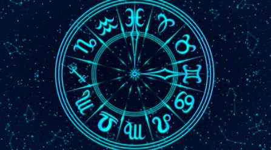

Quote of the Day "Plenty of people miss their share of happiness, not because they never found it but becasue they didn't stop to enjoy it"

Today's Matches:
♏
♈
Love: Aries ♈
Career: Sagittarius ♐
What is Mercury Retrograde?
When Mercury is in retrograde, technology, communication, travel, logic, and information all get disrupted, but understanding Mercury retrograde's meaning, the risks and benefits behind it, the sign it's in, as well as how long it lasts can help you deal with atrology's most nerve-wracking event.
Feeling off?